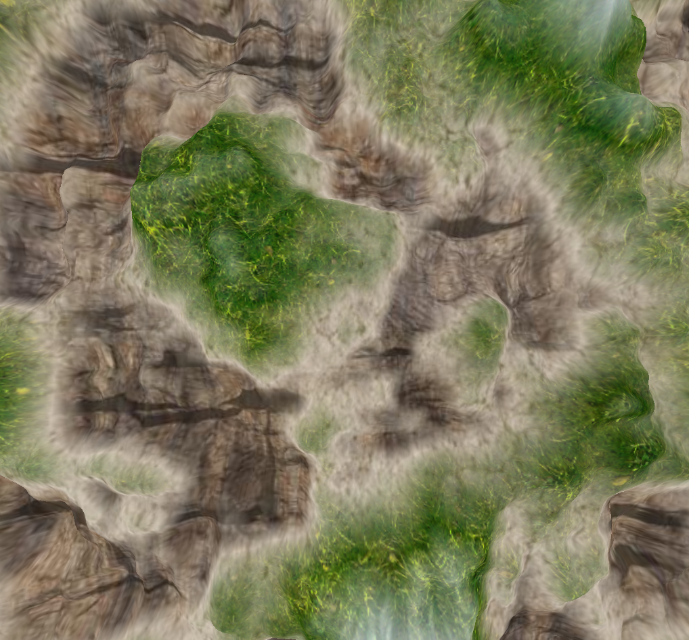
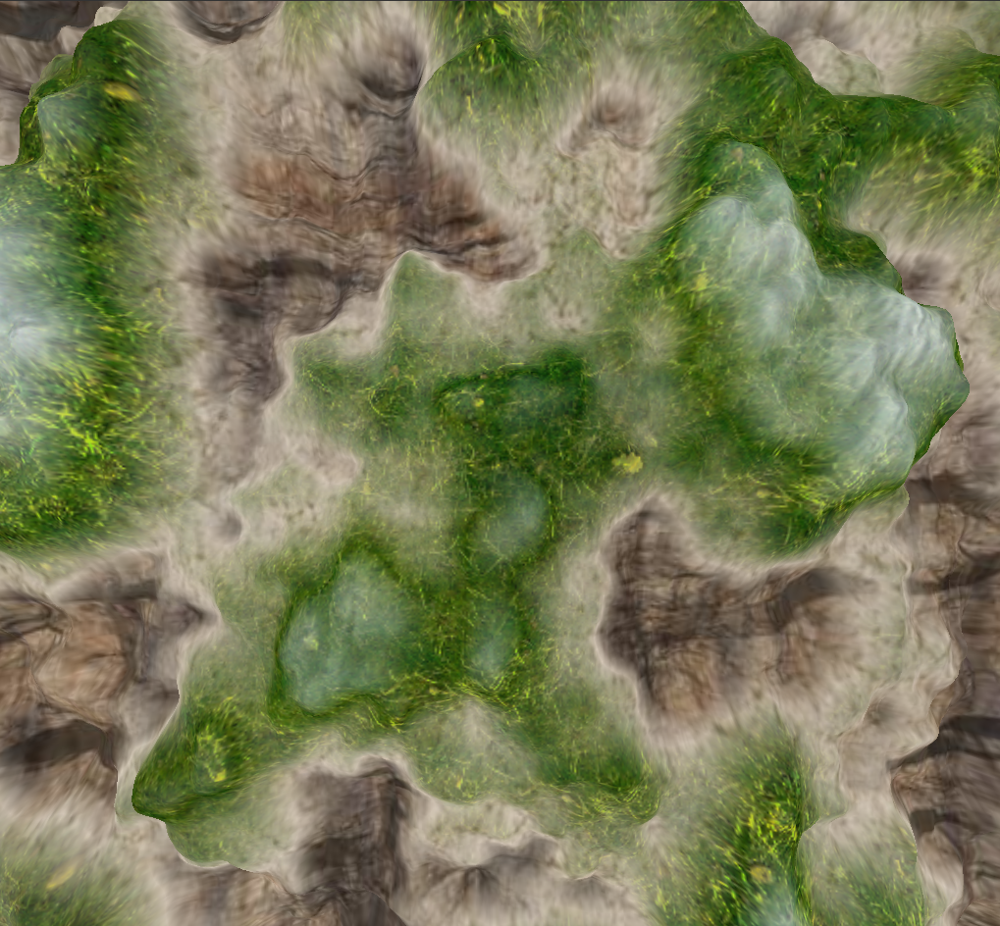

CS4515 -Assignment 2 - Tech Demo - 3D Computer Graphics and Animation
Leonardo Lago, Lorenzo Sibi, Alberto Pasinato
This report documents the creation of a comprehensive 3D Tech Demo developed using OpenGL. The demo showcases various computer graphics techniques, meeting the minimal requirements and integrating additional advanced features. The application runs as a single cohesive unit where each feature can be toggled via a custom UI.
The demo includes multiple camera viewpoints, including a third-person camera that follows a character and a bird-view camera that is also the view of the minimap.
Implementation: This was achieved using OpenGL and ImGui to control and switch between viewpoints.
Screenshots:


Details: Implemented PBR (Physically Based Rendering) shaders to simulate realistic material properties, including metallic and rough surfaces. State-of-the-art methodologies were implemented. In particular, the documentation of the Filament project was followed as a theoretical basis (references can be found at the end of this report).
Controls: L for positioning the light on the current camera position.
Screenshots:


Applied material textures, such as kd (diffuse), ks (specular), and roughness maps, to various objects within the scene.
Implementation: In this case, it was decided to incorporate this feature within the already mentioned PBR. For example, the KD coefficient is automatically calculated as 1 - KS. For further details see the pbr_frag.glsl shader.
For the screenshots, refer to the previous section.
Details: Integrated normal mapping for detailed surface textures, creating the illusion of depth and complexity without additional geometry. it is possible to activate/deactivate normal mapping directly from the GUI, using the appropriate checkbox.
Implementation: Implemented by modifying fragment shaders to account for normal texture maps. Tangent and bitangent were added to each vertex for calculating in tangent space.
Screenshots:


Details: Added environment mapping using cube maps for realistic refraction (first picture) and reflections (second picture) on surfaces.
Implementation: Implemented through GLSL and cube maps textures.
Screenshots:


Details: The demo includes a model that moves along a smooth path composed of three Cubic Bézier curves. The rendering of the path can be toggled on or off.
Implementation: Used mathematical functions to generate and render the path, with movement calculated in real-time. Used tessellation shaders to render the 3 curves on the scree.
Details:Robot with 11 different parts that can be rotated indipendently on their own rotation centers.
Implementation:Used transformations and rotation calculated in the right order.
Commands:
Details: Created a procedurally generated terrain using tessellation and Perlin noise (Ken Perlin), to simulate realistic topography.. For the implementation of the latter, the theoretical basis shown here was followed (see also references).
Implementation: Implemented by generating a heightmap texture with perlin noise and fractal brownian motion in the cpu and then sampling it on the shaders. The terrain is generated using tessellation control and tessellation evaluation shaders and dynamic LOD.
Screenshots:


Details: Applied 4 different texture on the terrain based on the height.
Implementation: Implemented by sampling the textures and linearly interpolate between the two nearest.
Screenshots:
For screenshots, please refer to the images in the previous section regarding the procedurally generated terrain
Details: Implemented a particle system for simulating fire effects.
Implementation: Used geometry shaders and transform feedback for particle generation and control. For rendering billboards and a texture atlas have been used.
Screenshots:


Implementation: A simple ambient occlusion algorithm is used during PBR shading; the ambient occlusion map simulates the behavior of ambient light being occluded by nearby geometry.
We do not include any screenshot because the AO is automatically rendered during the PBR (see the pbr_frag.glsl code for more details).
Details: A 2D minimap was integrated into the demo to display the surrounding environment from a bird’s-eye view.
Implementation: The `Minimap` class was created with customizable dimensions (default 200x200). The class initializes a framebuffer and shader, constructs the VAO and VBO for a quad representing the minimap, and sets up vertex attributes for position and texture coordinates. The minimap is rendered using OpenGL functions and a dedicated shader, ensuring it is correctly overlaid without depth interference by temporarily disabling depth testing.
Screenshots:

Details: Constant speed on Bezier Curves archived using reparametition of the variable t, using an ordered map (look-up table) and linearly interpolating
Implementation: A lookup table was generated to map the parameter t to the arc length distance traveled. This method ensures uniform movement speed across the curve:
calculatePositionOnBezier function computes positions on the curve using weighted combinations of control points.getTimeFromDistance function interpolates the parameter t based on the desired distance using the lookup table.Screenshots:


Details: Camera follows the terrain as it moves. Calculated by interpolating bilinearly in the heightmap values closest to the camera.
Screenshots:


Details:Shadows generated by 2 lights using shadowmapping and summing the contributions of the two lights in a lambert diffusion shader.
Screenshots: